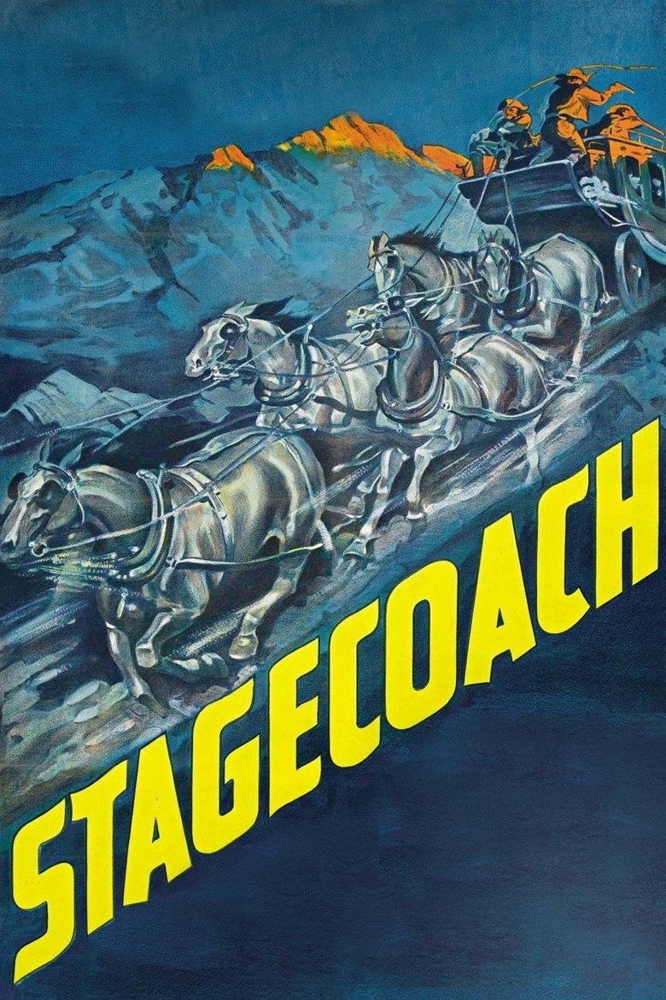

Fiche technique

Synopsis
Tonto, territoire de l'Arizona. La diligence pour Lordsburg embarque une cargaison d'humanité que la ville est trop heureuse de voir partir : Dallas, prostituée chassée par la ligue de vertu locale ; Doc Boone, médecin noyé dans le whisky ; Peacock, timide représentant en alcools que le Doc adopte aussitôt ; Hatfield, joueur sudiste aux manières d'aristocrate ; Mme Mallory, enceinte, qui rejoint son officier de mari ; et Gatewood, le banquier respectable — qui s'enfuit, sa sacoche pleine de la caisse de sa banque. Le shérif Curly monte à côté du cocher Buck : Geronimo a quitté la réserve, la cavalerie n'escortera pas tout le trajet[1][2].
En route, la diligence cueille le Ringo Kid, évadé de prison pour venger son père et son frère assassinés par les Plummer, qui l'attendent à Lordsburg. D'étape en étape — un accouchement à Apache Wells, un ferry brûlé, l'attaque apache dans les salines — le petit monde se recompose : les parias se révèlent, les notables se défont, et à l'arrivée, Ringo obtient ses trois balles et Dallas son avenir[1][2].
Contexte de production
En 1938, le western est un genre déchu — matière à séries B fauchées depuis l'arrivée du parlant — et le projet de Ford essuie les refus de tous les studios, d'autant qu'il s'obstine sur un point : le rôle principal ira à John Wayne, acteur de sous-westerns à poverty row que personne ne prend au sérieux. David O. Selznick s'y intéresse puis se retire, lassé ; le producteur indépendant Walter Wanger exige Gary Cooper et Marlene Dietrich. Ford tient bon. Compromis final : Wanger ne met que 250 000 dollars — la moitié du budget espéré — et Claire Trevor, plus connue que Wayne, prend la tête d'affiche[1].
Le tournage invente au passage un paysage mythologique : c'est le premier film que Ford tourne à Monument Valley — sept jours seulement sur place, le reste en studio et dans les ranchs californiens, mais ces mesas deviendront la scène primitive de tout son cinéma[2]. Et un homme y risque sa vie pour l'anthologie : le cascadeur Yakima Canutt, qui saute d'un cheval lancé sur l'attelage à pleine vitesse, puis passe sous la diligence entre les sabots et les roues — cascade jamais rééditée telle quelle, matrice de toutes les poursuites du cinéma d'action à venir[1].
Structure narrative
La construction est d'une pureté d'épure : un trajet, des relais, un terminus — et à chaque halte (Dry Fork, Apache Wells, Lee's Ferry), un vote, un repas, une naissance ou une défection qui redistribue les places[2]. Le huis clos roulant fonctionne en microcosme social : neuf voyageurs, toutes les strates de l'Amérique — et Ford fait de chaque scène de table un tribunal silencieux des préjugés, où l'on voit qui s'assoit près de qui, qui sert qui, qui baisse les yeux[2].
Le suspense est un modèle de rétention : Geronimo n'est qu'un nom pendant une heure — un fil de télégraphe coupé, un mot murmuré — et l'attaque tant redoutée ne survient qu'au dernier quart, brève, foudroyante, résolue par la charge de cavalerie la plus imitée de l'histoire. Reste alors le vrai dénouement, que le film a soigneusement gardé pour la nuit de Lordsburg : le duel avec les Plummer — hors champ, trois coups de feu dans le noir — et la question de savoir si Dallas dira la vérité. Ford sait exactement lequel des deux règlements de comptes compte.
Mise en scène et procédés techniques
Deux régimes d'espace s'affrontent : l'immensité de Monument Valley — que la caméra de Bert Glennon cadre comme une instance morale, « l'existence d'un système de valeurs plus vaste » surplombant les mesquineries humaines[2] — et l'intérieur de la diligence, filmé serré, visage contre visage. Ford y ajoute une audace technique que le Hollywood de 1939 ignore : des intérieurs à plafonds apparents, écrasant les personnages dans les relais. Un jeune homme prendra bonne note — Orson Welles, qui déclara avoir regardé le film une quarantaine de fois en préparant Citizen Kane : « c'était comme aller à l'école »[1].
Et il y a l'entrée de Ringo : la diligence s'arrête au bruit d'une carabine, et la caméra fonce en travelling avant sur John Wayne faisant tournoyer son Winchester, jusqu'au gros plan qui perd un instant la netteté tant il arrive vite — la plus célèbre présentation de star de l'histoire du cinéma, un acteur de série B intronisé mythe en quatre secondes. L'attaque finale, réglée avec Canutt dans les salines, tient du manuel : axes multiples, caméra au ras des sabots, géographie limpide — sept minutes que tout le cinéma d'action recopie encore[1][2].
Personnages principaux
Le génie du scénario de Dudley Nichols est d'inverser la hiérarchie sociale par la hiérarchie morale. Dallas (Claire Trevor, bouleversante) et le Ringo Kid (John Wayne, dont la candeur physique n'a jamais été aussi bien employée) sont les parias — prostituée et évadé — et les seuls êtres intégralement bons du voyage : lui ne sait même pas « voir » ce qu'elle est, et cette cécité-là est la plus belle déclaration d'amour du western[2].
Doc Boone (Thomas Mitchell, Oscar du second rôle) est l'ivrogne philosophe que la naissance d'Apache Wells dégrise et rachète — la dignité médicale retrouvée dans la vapeur du café noir[1][2]. En face, la respectabilité fait naufrage : Gatewood, le banquier qui sermonne tout le monde — « ce qui est bon pour les banques est bon pour le pays » — la sacoche volée sur les genoux, seul personnage que le voyage n'améliore pas d'un pouce[2] ; et Hatfield (John Carradine), joueur sudiste dont la galanterie surannée cache le dernier réflexe d'une caste morte. Autour d'eux, la ronde des seconds rôles fordiens — Buck le cocher pleurnicheur, Peacock le doux VRP que tout le monde appelle « révérend » — compose la première grande famille de voix du réalisateur.
Thèmes
Le thème central est l'hypocrisie de la civilisation : le film s'ouvre sur une ligue de vertu expulsant Dallas et Doc Boone de Tonto, et se referme sur le mot du Doc regardant Ringo et Dallas partir vers le ranch : les voilà « sauvés des bienfaits de la civilisation ». Entre les deux, le désert aura servi de révélateur — les valeurs s'inversent à mesure que la société s'éloigne, et c'est chez les exclus que logent le courage, la pitié et l'honneur[2].
Ford et Nichols revendiquaient la charge : leur film, disaient-ils, était « littéralement un acte politique » — satire du banquier voleur en pleine Amérique post-Dépression, réhabilitation d'une prostituée en héroïne romantique au nez du code Hays[2]. S'y ajoute le thème fordien par excellence : la communauté provisoire — neuf étrangers qu'un danger commun transforme en société miniature, meilleure que la vraie, le temps d'un voyage. La naissance au milieu du désert en est le sacrement : autour d'un nourrisson, une prostituée devient madone et un ivrogne redevient médecin. Quant aux Apaches, force létale et sans visage, ils appartiennent à l'imaginaire de 1939 — Ford lui-même passera sa carrière à complexifier ce regard, jusqu'au crépusculaire Les Cheyennes.
Réception critique et postérité
Sorti le 2 mars 1939 — l'année-miracle d'Hollywood —, le film est aussitôt salué par la critique et la presse professionnelle, engrange un profit honnête (près de 300 000 dollars) et décroche sept nominations aux Oscars, pour deux statuettes : Thomas Mitchell et la partition d'airs folkloriques[1]. Le public américain, lui, se montre d'abord plus tiède — « trop de psychologie, pas assez d'action », dit-on — et c'est l'Europe, cinéphile, qui installera le film à son rang[3]. André Bazin, en 1955, en donne la formule définitive :
« L'exemple idéal de la maturité d'un style atteignant le classicisme — l'équilibre parfait entre les mythes sociaux, l'évocation historique, la vérité psychologique et la thématique traditionnelle de la mise en scène du western. » André Bazin, « Évolution du western », 1955, cité via la recherche documentaire[3]
La postérité est celle d'une matrice : le western redevient un genre majeur pour trente ans, Ford trouve son paysage et son acteur — huit décennies plus tard, « un western de John Ford avec John Wayne à Monument Valley » reste le pléonasme fondateur du genre —, Welles en fait son école, et la Bibliothèque du Congrès l'inscrit au National Film Registry dès 1995[1]. Il n'y a guère de film de 1939 dont descendent plus directement autant d'images d'aujourd'hui.
Conclusion
La Chevauchée fantastique est de ces films fondateurs qu'on croit connaître avant de les avoir vus, tant tout le cinéma en a hérité — et qui surprennent pourtant à chaque vision par leur finesse : sous le récit d'aventures parfait, une comédie de mœurs au scalpel ; sous le western, un pamphlet social ; sous l'action, une méditation sur qui mérite quoi. Bazin avait raison : c'est le classicisme même — non pas l'académisme, mais ce moment rare où un genre trouve d'un coup sa forme juste, son paysage, son visage.
Le dernier plan dit tout : la carriole de Ringo et Dallas passe la frontière, et Doc Boone lève son verre aux amants « sauvés des bienfaits de la civilisation ». Toute l'ambiguïté américaine de Ford tient dans ce toast — la civilisation est ce qu'on bâtit et ce qu'on fuit, et le bonheur n'existe qu'à la lisière. Quatre-vingt-sept ans plus tard, la diligence roule encore : il suffit d'un plan de Monument Valley, n'importe où, pour que le cinéma entier se souvienne d'où il vient.
Sources
- Wikipédia (en) — « Stagecoach (1939 film) » : production (refus des studios, retrait de Selznick, exigences de Wanger, 250 000 $, top billing de Claire Trevor), Monument Valley, cascades de Yakima Canutt, sortie du 2 mars 1939, Oscars (Mitchell, musique) sur 7 nominations, citation d'Orson Welles (« comme aller à l'école »), National Film Registry 1995. en.wikipedia.org
- Ciné-club de Caen — « La Chevauchée fantastique (Stagecoach) de John Ford » : microcosme social, étapes du voyage, Monument Valley comme instance morale (7 jours de tournage sur place), personnages (Dallas/Ringo, Doc Boone, Gatewood), « littéralement un acte politique » (Ford/Nichols), hypocrisie bourgeoise. cineclubdecaen.com
- Critiques françaises consultées via recherche web (DigitalCiné, AlloCiné, À la rencontre du septième art) : citation d'André Bazin (« Évolution du western », 1955), accueil américain initial tiède et consécration européenne, statut de mètre-étalon du genre. digitalcine.fr
- The Movie Database (TMDB) — fiche du film (données factuelles, affiche). themoviedb.org/movie/995